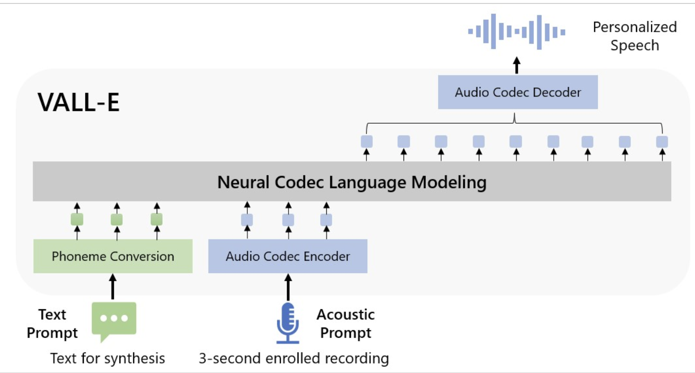
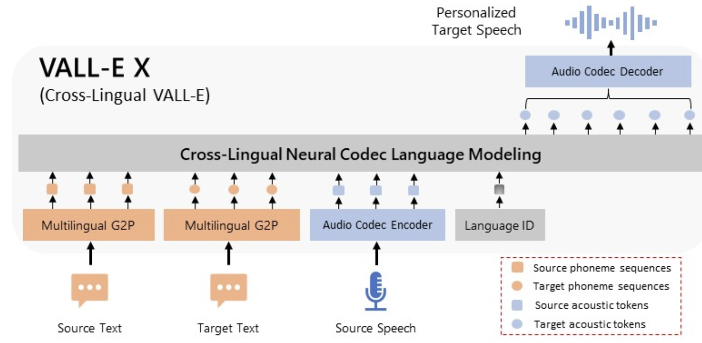

VALL-E #
VALL-E is a neural codec language model for text-to-speech (TTS) synthesis that can generate high-quality speech that is indistinguishable from human speech. It is trained on a massive dataset of text and audio, and can also clone speakers’ voices, even from a short sample of their speech. VALL-E works by first converting text into a sequence of discrete codes. These codes are then used to generate a corresponding sequence of audio tokens. The audio tokens are then decoded into a waveform using a neural audio codec model.

Key features #
- Uses a language modeling approach and applies it to TTS.
- Train a neural codec language model using discrete codes derived from an off-the-shelf neural audio codec model, and regard TTS as a conditional language modeling task rather than continuous signal regression.
- The model takes in text prompts as phonemes and a 3-second recording sample from the target speaker.
- The model then generates the corresponding acoustic tokens conditioned on the acoustic tokens of the 3-second recording and the phoneme prompt.
- Finally, the generated acoustic tokens are used to synthesize the final waveform with corresponding neural codec decoder.
Ultimately, VALL-E generates synthetic, natural-sounding speech with high degree of similarity to the speaker with zero-shot prompting, outperforming YourTTS on LibriSpeech and VCTK.
VALL-E X #
VALL-E X is an extension of VALL-E that enables cross-lingual text-to-speech synthesis and speech-to-speech translation. It is trained on a multilingual dataset of text and audio, and can synthesize speech in a target language from a text prompt in the source language, while preserving the speaker’s voice, emotion, and acoustic environment.YourTTSYourTTS is a zero-shot multi-speaker text-to-speech (TTS) model that can generate realistic and engaging speech for a wide range of applications, even without having to train it on a large amount of data. It achieves this by using a number of modifications to the VITS TTS model, including external speaker embeddings, a multilingual training dataset, and joint training of the speaker encoder and decoder.
